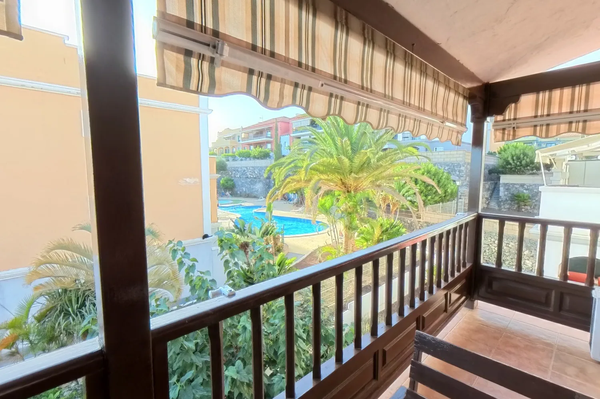
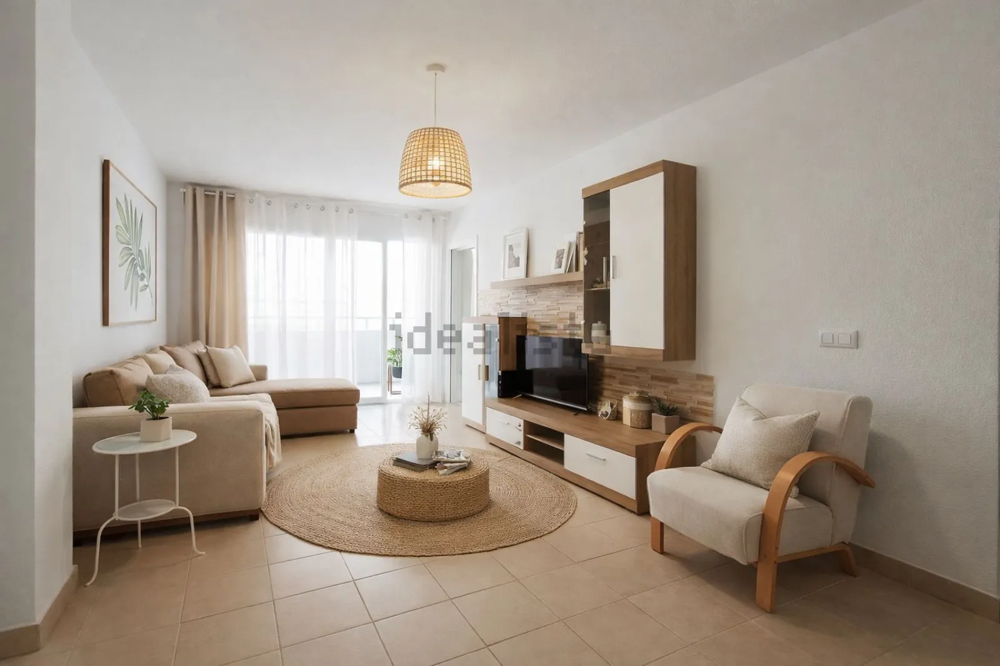

AHORA MISMO · SUR DE TENERIFE
Así están ahora
las playas del sur.
Catorce cámaras públicas, de Los Gigantes a El Médano. Cada imagen se renueva cada dos minutos: recarga la página para ver la última, o pulsa una cámara para ver el vídeo en directo.
Costa Adeje


Arona


Granadilla de Abona


Guía de Isora · Santiago del Teide


Imágenes de SkylineWebcams. Al pulsar una imagen sales a su web.
El clima, en cifras
No es un día
de suerte.
21,7 °Cmáxima media en enero
15,2 °Cmínima media en enero
2.725horas de sol al año
15días de lluvia al año
Mes a mes
| Mes | Máxima °C | Mínima °C | Horas de sol | Días de lluvia |
|---|---|---|---|---|
| Enero | 21,7 °C | 15,2 °C | 193 | 1,8 |
| Febrero | 22,0 °C | 15,0 °C | 195 | 2,2 |
| Marzo | 23,1 °C | 15,6 °C | 226 | 1,9 |
| Abril | 23,1 °C | 16,0 °C | 219 | 1,1 |
| Mayo | 23,9 °C | 17,0 °C | 246 | 0,3 |
| Junio | 25,4 °C | 18,8 °C | 259 | 0,0 |
| Julio | 27,7 °C | 20,2 °C | 295 | 0,0 |
| Agosto | 28,4 °C | 21,1 °C | 277 | 0,2 |
| Septiembre | 27,9 °C | 21,1 °C | 213 | 0,6 |
| Octubre | 26,8 °C | 20,0 °C | 214 | 1,6 |
| Noviembre | 24,8 °C | 18,2 °C | 193 | 1,9 |
| Diciembre | 22,8 °C | 16,5 °C | 195 | 3,5 |
Medias diarias de cada mes. Día de lluvia: 1 mm o más. Fuente: AEMET, estación Tenerife Sur Aeropuerto, valores normales 1981-2010.
Vivir aquí
Viviendas en venta
cerca de estas playas.
Si lo que ves te gusta, mira qué hay en venta en el sur. Te respondemos por escrito, sin llamadas automáticas.
 Torviscas Centro y Alto · AdejeApartamento reformado con terraza y vistas a la piscina395.000 €
Torviscas Centro y Alto · AdejeApartamento reformado con terraza y vistas a la piscina395.000 €
Las Chafiras · San Miguel de AbonaÁtico de 3 dormitorios con terraza y vistas a la piscina299.000 €
Cabo Blanco · AronaApartamento amplio con garaje, trastero y balcón de 12 m²255.000 € Los Abrigos · Granadilla de AbonaEntreplanta luminosa a un paso del paseo marítimo189.000 €
Los Abrigos · Granadilla de AbonaEntreplanta luminosa a un paso del paseo marítimo189.000 € Casco Urbano · AdejeApartamento con terraza de 15 m² y vistas al mar165.000 €
Casco Urbano · AdejeApartamento con terraza de 15 m² y vistas al mar165.000 € El Fraile · AronaLoft de dos habitaciones en planta baja135.000 €
El Fraile · AronaLoft de dos habitaciones en planta baja135.000 € El Fraile · AronaLoft de una habitación, listo para entrar o rentabilizar129.000 €
El Fraile · AronaLoft de una habitación, listo para entrar o rentabilizar129.000 €